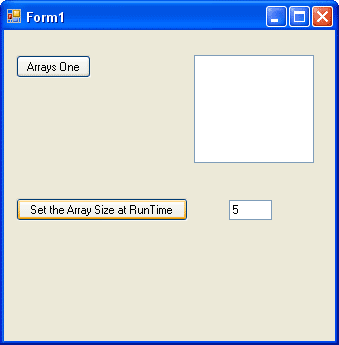
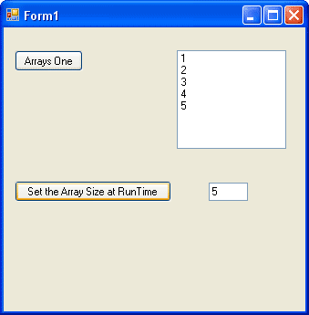
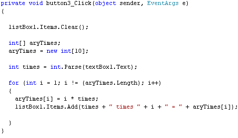
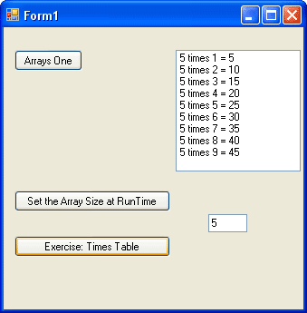

Set the Size of a C# array at RunTime
<< Continues from the previous lesson
The size of an array refers to how many items it holds. You've seen that to set the size of an array, you do this:
int[ ] someNumbers;
someNumbers = new int[10];
Or this:
int[ ] someNumbers = new int[10];
But sometimes, you just don't know how big the array needs to be. Think of a programme that pulls information from a database. You want to loop round and check how many of your customers still owe you money. You've decided to hold all the data in an array. But how big does the array need to be? You can't set a fixed size before the programme runs, simply because the number of people owing you money could change. It could be low one month, and high the next.
To solve the problem, you can set the array size at runtime. This would mean, for example, setting the array size after a button is clicked. To see how it works, add another button to your form, along with a text box. Your form should then look something like this:

We've typed the number 5 in the text box, but you can have any number you like.
Double click your button and enter the following code:
int aNumber = int.Parse(textBox1.Text);
int[ ] arraySize;
arraySize = new int[aNumber];
The first line of the code gets the value from the text box and places into a variable we've called aNumber. The second line sets up an array as normal. But look at the third line:
arraySize = new int[ aNumber ];
Now, the figure between the square brackets of int is not a number we've just typed. It's a variable name. Since the value of the variable is coming from the text box, the size of the array will be whatever number is typed in the text box.
Add the following loop to your code, which just assigns values to the array, and places them in the list box on your form:
for (int i = 0; i != (arraySize.Length); i++)
{
arraySize[i] = i + 1;
listBox1.Items.Add(arraySize[ i ]);
}
Run your programme and click your button. You should see this in your list box:

Now delete the 5 and type a different number. You should see the number from 1 to whatever number you've just typed.
This technique can be used whenever your programme needs to get its array size at runtime - assign to a variable, and use this variable between the square brackets of your array.
Use an array in a times table programme
To get some more practice with arrays, add another button to your form. Set the text to be this:
Exercise: Times Table
Now double click the button and add the following code:

When you run your programme and click the button, your form should look something like ours:

Notice that the 5 times table is displayed in the list box. Now try the following exercises:
Exercise K
The first item in the array, arrayTimes[0], doesn't get used - why is this?
Exercise L
Amend the code so that the times table from 1 to 10 displays in the list box, not 1 to 9
In the next lesson, we'll take a look at something called a Mutli Dimensional Array.